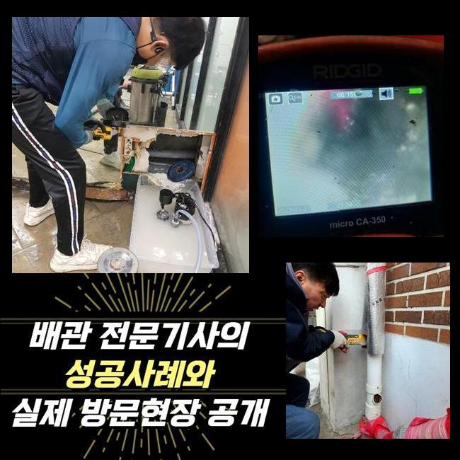
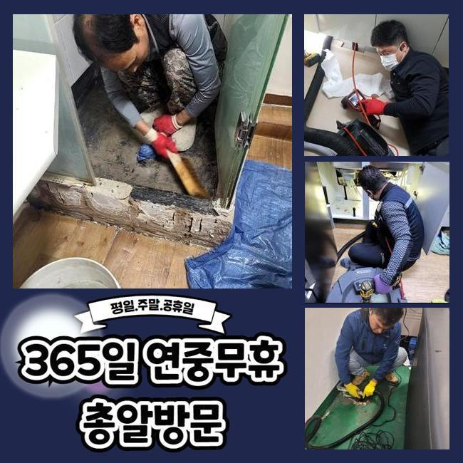
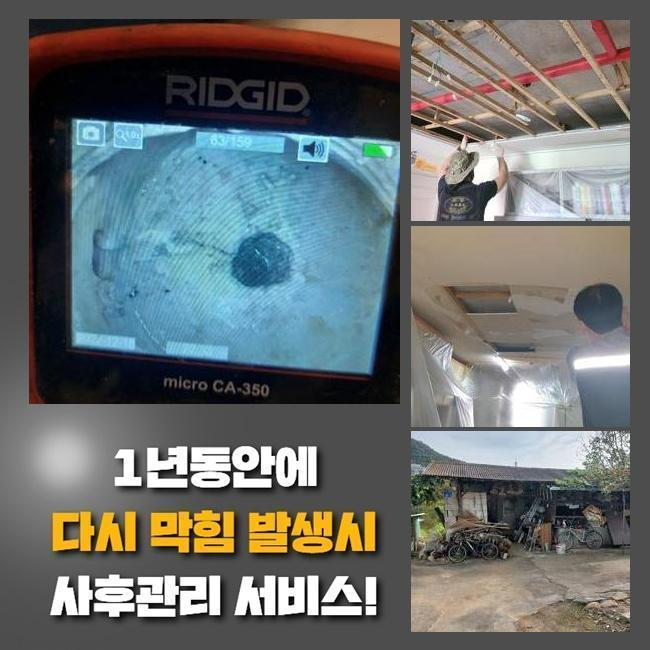
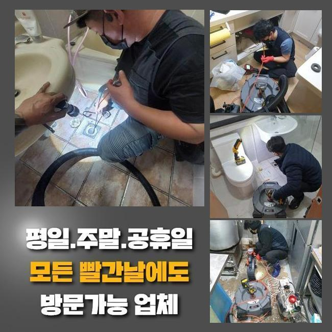
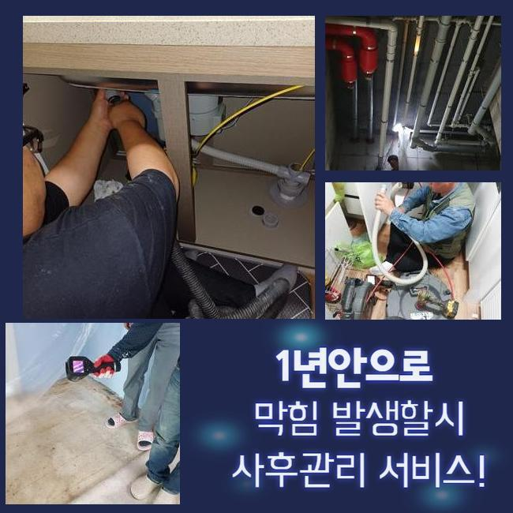
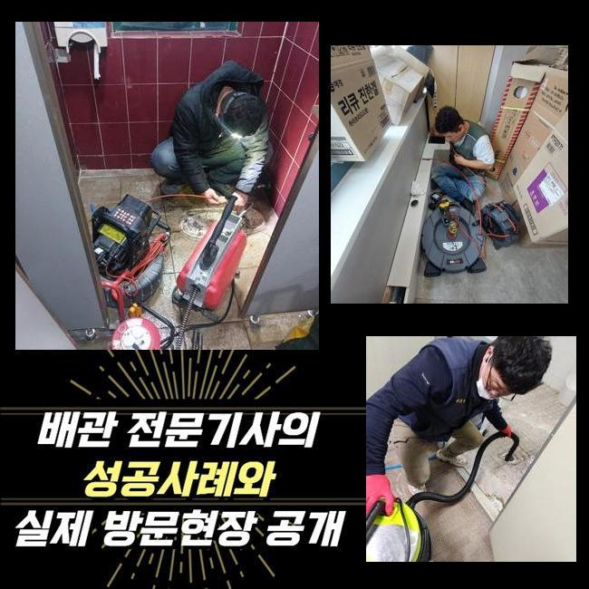

🏠 오금동욕실역류 궁내동 횡주관청소 부속수리
용인 하수구막힘 전문 시공 후기

📋 작업 개요
- 위치: 용인
- 서비스 유형: 하수구막힘, 배관막힘, 맨홀막힘, 누수수리, 역류해결, 배관청소, 고압세척, 설비공사
- 작업 일시: 2025. 2. 12. 22:54
- 업체명: 하수구수사대 (010-5615-2118)
🔍 문제 상황
오금동욕실역류 궁내동 횡주관청소 부속수리
하수관은 주택이나 매장 등에 꼭 필요한 설비로써 아주 중요해요
오염된 물을 배출하여 청결하고 깔끔한 생활을 영위 할 수 있도록 하며 질병의 발생으로부터 보호합니다
이러한 배수구가 막히게 되는 경우 이물질이 누적되어 썩는 냄새가 나게되고 하수구가 있는 곳에서 곤란한 상황이 일어날 수 있어요
이로 인해 오수가 역으로 치솟거나 깨끗한 물을 사용할 수 없는 환경으로 일상의 불편한 일들이 일어나게됩니다
이른 오전에 배수관의 역류 상황으로 의뢰를 급히 맡기셔서 빠르게 주소지에 도착했습니다
고객님께서 알려주신 집을 살펴보았습니다
확인해본 결과로는 고객님이 가정에서 하수를 내려보낼때마다 부동전의 배수구에서 오수가 역류하는 상황들이 일어났습니다
유독 주방쪽에서 수도를 사용하실때 하수라인을 통해 올라오는 고약한 냄새까지 심각했어요

🔎 원인 분석
💡 전문가 진단: 정밀 진단 장비를 사용하여 슬러지의 고착 여부를 판명하고 타격/세척 작업을 실시했습니다.
이러한 문제들을 처리하고자 내시경기기를 통해서 중심 맨홀의 배수구 속을 점검했습니다
음식 기름등이 부패되며 배수구에서 고약한 냄새를 풍기는 상태였고 집안으로 역류하는 등의 사고가 발생할 수도 있기때문에 신속하게 수리에 들어갔습니다
메인이 되는 중심관의 역할을 자세하게 말씀 드려보겠습니다
중심관의는 일상 생활 속에서 발생하는 오염된 물을 배출시키는 중심 역할을 합니다
메인 배관이 막히게 되면 안쪽에서 빠져나가지 못한 하수가 부동전 방향의 배수구에서 역류하는 상황까지 생깁니다
이럴때는 내부쪽에서 배관만 수리한다고 해도 원인을 처리하는건 불가능하므로 중심이 되는 본관을 해결하셔야 이후에 사용이 원활하게 이루어집니다
보편적으로 일어나는 사소한 일은 자체적으로 처리하시는 경우도 있겠으나 사이즈가 큰 메인 배수구는 고압의 세척기계를 투입하여 딱딱하게 변한 오염물질을 세척합니다
고압세척기기의 노즐라인은 배수라인의 꺾인 부위까지 모두 닿기때문에 신속하게 세척작업이 진행됩니다
메인 배관에 고압의 세척장치를 활용해 음식찌꺼기와 다량의 오염물질을 청소했어요
청소를 마치고 내시경장치를 이용해서 하수가 잘 배수되는지 체크했습니다

🔧 작업 과정
사례자께서 모니터 화면을 같이 체크 하시면서 배수구가 완벽하게 세척되어 통수가 잘되는 것을 보시고 마지막 주변 정리까지 꼼꼼하게 부탁 하셨습니다
다음 현장에 출동하여 배수관이 막힌 문제점을 수리하였습니다
두번째 현장도 역시 욕실과 베란다쪽에서 오염된 물이 상습적으로 범람하면서 불순물이 같이 올라오며 악취까지 생기는 상황으로 매우 심각했습니다
이런 경우엔 세탁실의 배수관을 통하여 라인 전체를 청소하는게 보편적이나 오늘같은 경우엔 작업과정이 어려운 P트랩으로 난관에 봉착했습니다
P트랩의 경우에 벌레의 침입을 방지하는데 유용하지만서도 꺾인 지점에 노폐물이 자꾸 쌓여 배수구가 막히게 되는 이유가 될 수 있습니다
이러한 현장에서는 고압세척기기를 이용할 수 없는 구조인 확률이 높습니다
노즐선을 투입할 수 없으므로 사례자님께 추가적인 비용들을 청구하지 않기위해 이상적인 수리방법을 찾아내야 했습니다
복잡하고 어려운 트랩의 구조상 고압세척장비를 이용하면 배수관이 손상될 수 있으므로 샤프트기기를 사용하여 작업을 진행했습니다
샤프트장치는 회전하는 힘으로 배수관에 쌓여있는 이물질들을 제거합니다
샤프트장비는 하수관을 보호하면서 끝쪽까지 작업이 가능합니다
솔질을 할 수 있는 장치를 샤프트기기에 장착하고 불순물을 분쇄할 수 있어서 구부러진 부위까지 진입시킬 수 있어서 하수라인의 깊은 곳에 누적된 침전물도 완벽하게 청소합니다
한번으로는 완벽하게 제거되지 않아서 샤프트장비를 계속해서 이용하여 딱딱하게 변형된 침전물을 청소했습니다
작업을 끝내고 통수가 잘 흐르고있는지 점검을 완료했고 사례자님께서도 역류사고가 발견됐던 배수구를 직접 보시고나서야 안심이 된다고 말씀하셨어요
배수구가 막힌 경우에 원인을 제거하지 않고 계속 사용하신다면 하수라인 내부에 누적 되어있는 침전물이 부패되면서 지독한 냄새까지 생겨나고 통수가 원활하게 될 수 없으므로 오수가 거꾸로 올라오는 상황이 일어나게 됩니다
하수라인 안쪽에서 압력을 받는 스트레스가 계속적으로 발생하면 배수관의 손상이 발생하여 누수같은 대형 공사로 이어지며 고객의 금전적인 부담과 시간적인 소모까지 이어집니다


✅ 작업 완료
하수설비의 이상이 생겼다면 전문 기술진에게 문의하셔서 빠르게 조치를 준비하시는게 좋아요
오늘 두곳의 현장에서 하수관 역류사고를 처리했고 배수관의 지독한 냄새 세척까지 완벽하게 마무리했습니다
의뢰인의 수도 사용 습관들을 개선하셔야 한다고 말씀 드리고 배수구 문제 또한 다시 발생하지 않도록 확실하게 체크했습니다
하수관 관련된 문제로 지체하지 마시고 저희들에게 전화 해주시면 바로 안내 해드리겠습니다



⚠️ 베란다 누수 및 방수 관리 방법
- ✅ 비가 많이 올 때 창틀 주변이나 아래층 천장에 얼룩이 생기는지 정기적으로 확인해 보세요.
- ✅ 우수관 주변 실리콘 마감이 들뜨거나 깨진 틈새가 있는지 손상 여부를 수시로 체크하세요.
- ✅ 베란다 바닥 타일의 줄눈(메지)이 소실되면 그 틈으로 물이 침투하여 누수가 유발됩니다.
- ✅ 누수 의심 증상 발견 시 방치하면 아래층 손실이 커지므로 즉시 전문가의 진단을 받으십시오.
💡 핵심 정리
- 확실한 장비 작업(내시경 점검 및 샤프트 스케일링)으로 원인을 뿌리 뽑습니다.
- 작업 후 1년 이내에 동일한 부위 재발 시 100% 무상 A/S 서비스를 보장합니다.
- 서울 · 경기 · 인천 전 지역에 24시간 언제든 긴급 출동할 수 있도록 항시 대기 중입니다.
❓ 자주 묻는 질문 (FAQ)
🚨 용인 하수구막힘 문제로 고민이신가요?
정확한 원인 진단과 확실한 시공으로 재발 없는 해결을 약속드립니다.
24시간 긴급 출동 | 서울 · 경기 · 인천 전지역 | 1년 내 재발 시 무상 A/S